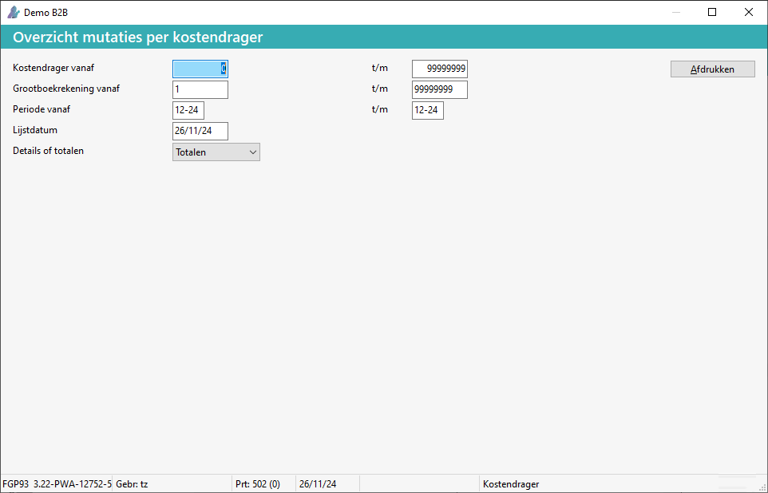

Wat is een kostendrager?
Een kostendrager is een eindproduct (bijv. machine) of project, waaraan kosten toegeschreven worden.
-
Uitgezonderd de kosten kunnen ook inkomsten toerekenen worden aan kostendragers.
- Zo kan d.m.v. marge-analyses het resultaat berekend worden.
Overzicht kostendrager
Om een overzicht aan te vragen, doorloopt u de volgende stappen:
-
Ga naar Mutaties per kostendrager (GDM).
-
Maak eventueel een selectie.

-
Kies voor de knop Afdrukken.
Het overzicht verschijnt op het scherm.
FAQ
Hierbij een overzicht: